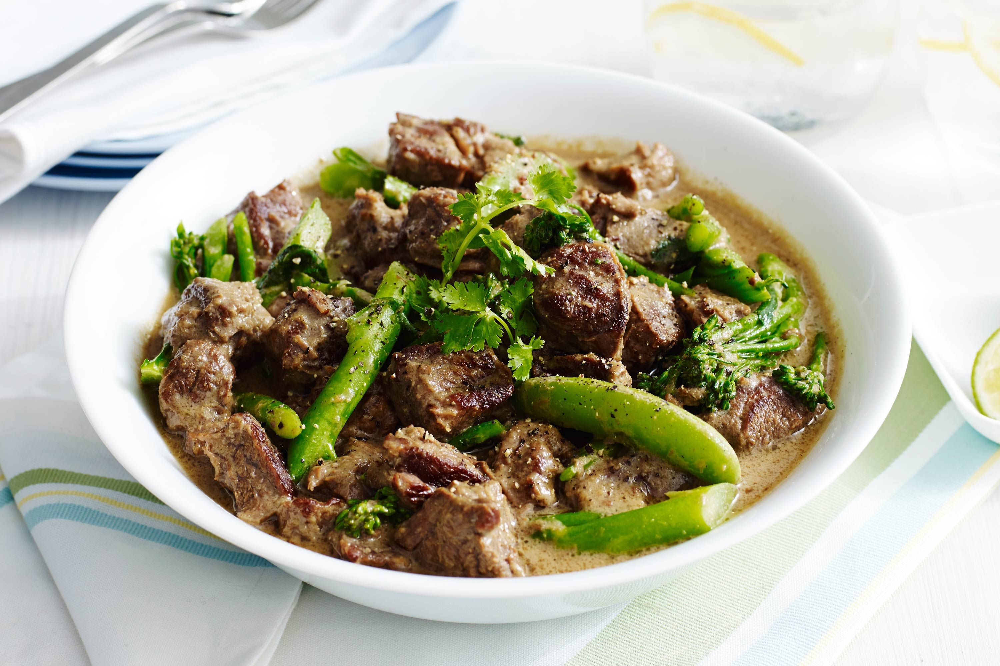

Beef Green Curry

Beef takes center stage with the fragrance of the paste sharing the spotlight
This beef green curry is thicker than most versions.
It has no vegetables and although it is very green, it isn't very hot. This dish can be topped with fresh green chiles to bring up the heat.
A drizzle of fresh coconut creme on top adds to the creamy look of the meal.
Ingredients for the curry paste
- 1 tablespoon coriander seeds
- 1 tablespoon cumin seeds
- 1 teaspoon white peppercorns
- 1 teaspoon coarse salt
- 1 tablespoon finely chopped galangal
- 1 tablespoon paper-thin lemongrass slices (with purple rings only)
- 1 teaspoon finely chopped markut lime rind
- 1/2 teaspoon ground tumeric
- 1 teaspoon packed Thai shrimp paste
- 5 fresh green Thai long chiles, deveined and coarsely chopped
- 7 fresh green bird's eye chiles
- 1 tablespoon finely chopped cilantro roots or stems
- 5 large cloves garlic
- 1/4 cup sliced shallots, cut against the grain
Ingredients for the curry
- 1/2 cup freshly extracted coconut cream, or 1/2 cup canned coconut cream
- 1/2 cup coconut milk
- 2 lbs untrimmed boneless well-marbled chuck or rib-eye steak, thinly sliced against the grain into bite-sized pieces
- 2 teaspoons fish sauce
- 1 teaspoon packed grated palm sugar
- 4 markut lime leaves torn into small pieces
- fresh green Thai long or bird's eye chiles, stemmed and halved lengthwise
- 1/4 cup packed Thai sweet basil leaves
Steps
- To make the curry paste, in a small frying pan, toast the coriander and cumin over medium heat stirring constantly, until fragrant, about 2 minutes
- Transfer to a mortar, add the peppercorns, and grind to a fine powder.
- Add the salt, then, one at a time, add the galangal, lemongrass, lime rind, tumeric, shrimp paste, chiles, cilantro, garlic, and shallots, grinding to a smooth paste after each addition.
- To make the curry, put the paste and coconut cream in a 4-quart saucepan, set over medium-high heat, and stir until the fat separates and the paste is fragrant, 1-2 minutes.
- Add the coconut milk, beef, fish sauce, and sugar, stir well, cover, turn the heat to medium, and cook until the beef in no longer pink, 7 to 8 minutes.
- Taste and adjust the seasoning with more fish sauce and/or sugar if needed.
- Check the consistency and amount of the sauce and add water if needed.
- Stir in the lime leaves, fresh chiles, and basil leaves.
- The curry can be transferred to a serving dish and served right away with rice. Top the curry with coconut cream